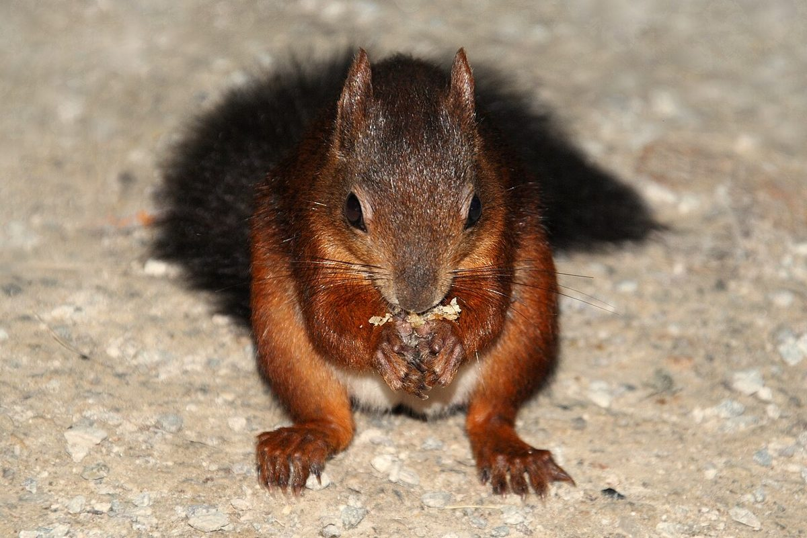
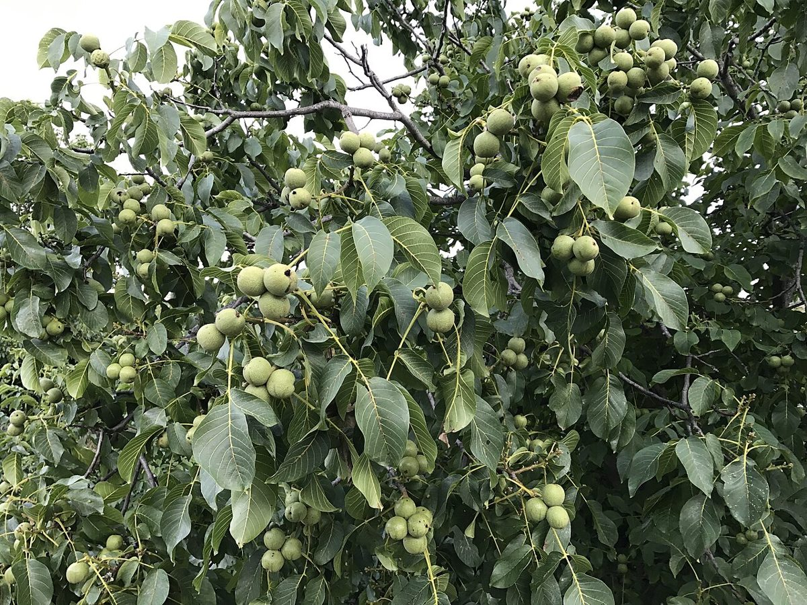
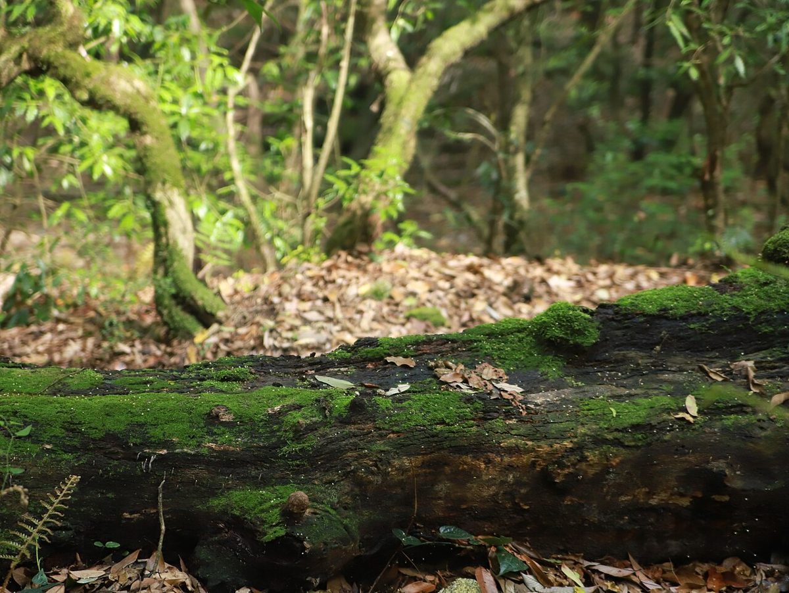
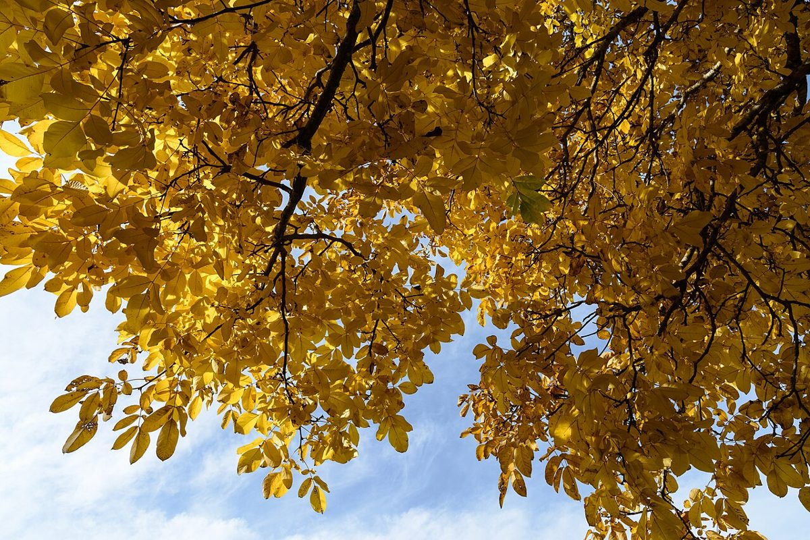

2 殻の中
店のこと
お店について確認できているのは、所在地・電話番号・Instagramのアカウントです。
このページの「想像してみる」部分は、制作側が想像して書いたものです。お店の実際の様子・考え・メニューとは関係がありません。
確認できていること
- 店名は「ベーカリーくるみ」、業種はベーカリー
- 所在地は愛知県知多市新舞子竜57−７(〒478-0036)
- 電話番号は090-4150-4138
- Instagramのアカウントは @kurumipanrisu
- 営業時間・定休日・メニュー・価格・ご予約・駐車場は準備中

想像してみる
殻を割る前の、くるみのように
くるみは、かたい殻のなかに実が入っています。このサイトでも、お店のくわしい中身はまだ殻のなか、つまり準備中です。由来は分かりません。制作側は、いつかお店の方からお話をうかがって、殻をひとつずつ割るように中身を載せていきたい、と想像しました(実際のお店の姿ではありません)。


